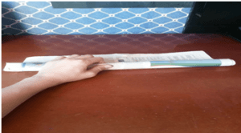
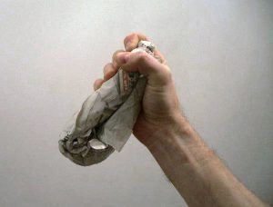

You certainly don’t need me to tell you that political violence is on the rise—I’ve already written two articles on this. Some would also argue that violent crime in general is on the rise as well.
In response to this violence, police are starting to get more involved—somewhat unevenly, of course, but involved nonetheless. Thus, weapons are no longer allowed to be carried willy-nilly into protests. However, our opponents may very well find ways to improvise weapons. Keeping that in mind, this article today will teach you four improvised weapons that you should watch out for.
For purposes of understanding their function and use, we can discuss how they are “made.”
1. The Millwall Brick
A favorite of English soccer “firms,” this is not the most effective weapon, but it is simple, cheap, and thus very common amongst those in the know.
It is very easily made: the transgressor first grabs a newspaper. If there is no newspaper, a skilled user will get as many sheets of heavy paper as possible—construction paper, a magazine, or even printer paper if all else fails. The papers are then placed on a flat surface. From here the paper can be “loaded” in two ways. One can moisten the paper (emphasis on moisten, not soak. It has to stay in one piece like paper mache), or place a small rock or a load of pennies in the center of the top paper. Once it’s prepared, they’ll begin rolling it up lengthwise and as tight as possible.

Once it’s in a tube, it’ll be folded in half. From there one can moisten it again, tie a lanyard around the end, use tape to “tighten” it, or “load” it in some other fashion.
While this is, again, not the most effective weapon (you can block it much easier than you could your average cudgel), it’s advantage is in its inconspicuousness. No policeman would arrest someone carrying a newspaper, right?

2. The Blackjack
The poor man’s flail or nunchaku, the blackjack is essentially a flexible club consisting of a heavy object inside some sort of pouch. Some would argue that this is properly called a slapjack, but that’s an issue for the linguists.
A “proper” blackjack is made of leather and has a rigid handle attached to the pouch, but any small-time thug can improvise one with any fabric object. A doorknob or paperweight inside a tube sock is often used, and again, not even our overly-litigious society can arrest somebody for wearing tube socks and carrying a paperweight.
Pantyhose, towels, a woman’s purse, these are all things to watch out for should you be going into a dangerous situation—and I’ll not make the obvious joke about your average Antifa member wearing pantyhose and carrying a purse.
For fun and edification, allow Steven Seagal to show how such a weapon can be used (skip to about 4:00).
3. Pens and the like
“Derp, this is pretty self explanatory” you might be saying to yourself—and for the most part it is. However, in writing this section I wish to convey two things. The first is how to tell if your opponent is skilled or not: the skilled opponent uses a fist grip.
Whereas the unskilled opponent will do some sort of hoopty “thumb on the spine grip”. If you see that kind of grip, you’ll have a much easier time disarming the guy.
The other thing is to point out that any long and sufficiently rigid object, even if it’s dull, can be thrusted effectively. A pen, a compass, even the aforementioned Millwall Brick can seriously hurt if you get hit with it.
And on that note…
4. The Umbrella
Believe it or not, the umbrella can in fact be used as an effective weapon. And bear in mind that I’m not referring to the “battle umbrellas” you can buy from arms companies and have been seen with some frequency amongst bodyguards and other security personnel. No, I’m referring to your average, full-sized folding umbrella.
Much like the pen as an improvised weapon, you can easily tell a skilled opponent from an unskilled opponent with regards to the umbrella: the unskilled opponent uses swings—a folding umbrella is far too fragile to take more than a couple of power swings, and thus you’ll be able to fight back pretty easily. The skilled opponent, in contrast, will use it like a bayonet: thrusting with both hands, aiming the point of the umbrella at you. That can take much more punishment, and deliver it too.
A truly skilled opponent might also buttstroke with the back hand, swinging the handle around for short range attacks, or possibly hooking and trapping techniques as well, but seeing as you’re likely not going to be fighting either Mr. Steed or Wong Fei-Hung, I’d be more wary of the bayonet-style stab.
In conclusion, should you unfortunately be forced into a dangerous situation, these are the improvised weapons you’ll have to watch out for. And if you manage to disarm your opponent, you can certainly do a lot worse than these to fight on.
Read More: 14 Self-Defense Tools To Use Where Weapons Are Banned